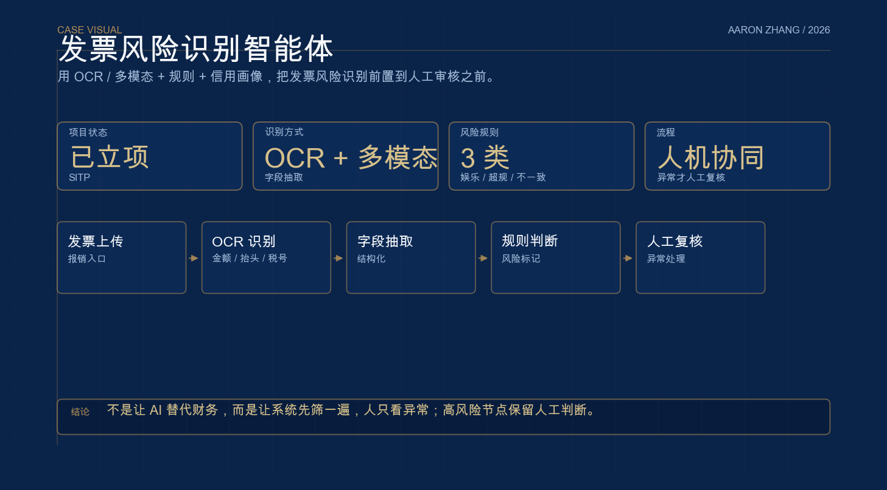

发票风险识别智能体
基于「信用画像 + AI 智能体」的报销流程优化方案，用 OCR 与多模态识别异常发票，防范财务造假。
| 项目 |
SITP 创新创业项目 · 已立项 |
| 时间 |
2025.12 – 至今 |
| 角色 |
核心组员 · 方案设计与智能体搭建 |
| 关键词 |
Coze OCR 多模态 风险识别 |
背景 / Context
高校财务报销存在两类痛点：
- 人工审核成本高：发票数量多、类型杂，财务老师需要逐张核对。
- 异常识别依赖经验：娱乐场所关联、金额超规、抬头/税号异常等问题，靠人眼容易漏。
项目希望在不改变现有报销流程的前提下，用「信用画像 + AI 智能体」把风险识别前置。
我的工作 / What I did
- 参与设计「信用画像 + AI 智能体」的报销流程优化方案。
- 基于 Coze 及同济 Agent 平台搭建发票识别智能体。
- 引入 OCR 与多模态能力，提取发票关键字段（金额、抬头、税号、消费类型等）。
- 设计异常识别规则，覆盖：
- 完成智能体的全流程调试与迭代，验证「上传 → 识别 → 风险判断 → 人工复核」的可行性。
结果 / Impact
- 项目已 立项，完成发票识别智能体的搭建与流程验证。
- 把「财务逐张看」变成「系统先筛一遍，人只看异常」，为后续扩大试点打基础。
- 方案同时考虑信用画像，尝试把「单张发票风险」扩展到「报销主体风险」。
关键数据 / Key Numbers
| 指标 |
数值 |
口径 |
| 项目状态 |
已立项 |
SITP 创新创业项目 |
| 识别方式 |
OCR + 多模态 |
发票字段抽取 |
| 风险规则 |
3 类 |
娱乐场所 / 金额超规 / 信息不一致 |
| 流程 |
人机协同 |
系统先筛，人工只看异常 |

图：上传、OCR/多模态识别、字段抽取、规则判断与人工复核的流程。
结论 / Takeaways
- AI 放在“筛选”而不是“终审”：高风险节点保留人工判断，既降低审核量，也避免模型误伤正常报销。
- 规则和模型各做一段：OCR 负责“读出来”，规则负责“判断异常”，信用画像负责把单张发票风险扩展到报销主体风险。
- 原型阶段不承诺准确率：项目完成流程验证，但没有大规模标注集和上线指标；这一点必须写清楚。
边界 / Limitations
- 目前处于项目立项与原型验证阶段，尚未大规模上线。
- 发票识别涉及敏感财务数据，案例不包含真实发票、金额或个人信息。
- 风险规则需要和财务老师共同校准，避免误伤正常报销。
可迁移的能力 / What it shows
- 流程设计：先画清楚报销流程，再决定 AI 放在哪一步。
- AI 落地判断：不是所有环节都适合自动化，高风险节点保留人工复核。
- 规则 + 模型组合：OCR 负责「读出来」，规则和模型负责「判断异常」。
说明：该项目为课程 / 创新创业项目。以上仅展示方案思路和个人贡献，不包含真实发票、财务数据或系统截图。